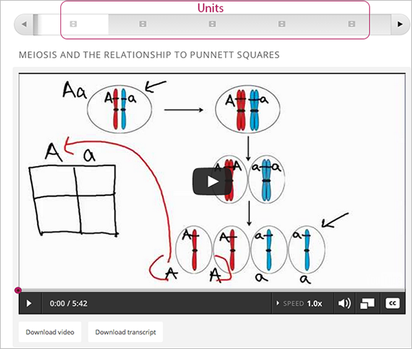

4.5. 构建课程单元¶
在大纲中创建单元前，请先了解以下信息：
- What is a Unit?
- `Viewing Units in the Outline`_
- `Viewing the Unit Page`_
- `Viewing Units as a Student`_
- `Unit Publishing Status and Visibility to Students`_
- Unit Publishing Status
创建课程单元时，您需要完成以下任务：
- Create a Unit
- Edit a Unit
- Preview a Unit
- Publish a Unit
- Discard Changes to a Unit
- View a Published Unit
- Hide a Unit from Students
- `Delete a Unit`_
您可以通过 course components 为单元添加内容。
4.5.1. 什么是单元？¶
单元是 subsection 的组成部分
一个单元通常包含若干个 components, 如 HTML content、 problems、 discussions， 和 videos。

4.5.3. 查看单元页面¶
在大纲中点击单元名称，即可打开单元页面。如下图
4.5.4. 以学生视角查看单元¶
在学习管理系统中，所有小节中的单元都以链接的形式出现在页面上方的课程进度条中，活动单元就在链接下方显示，如下图所示：
4.5.5. 单元工作流程¶
当您在课程大纲中完成 section 和 subsection 后，您就可以开始搭建单元。
基本的操作步骤如下：
发布单元后，您可以进行一下操作：
下图显示了搭建单元的流程：
完成以上步骤后，单元的 发布状态 就会发生改变。 课程内容是否对学生可见取决于单元的发布状态及 release dates，详细信息请参看下一节。
4.5.6. 单元发布状态与对学生可见性¶
以下信息总结了学生是否可以查看单元内容的情况：
- 学生无法看见发布状态为 Draft (Never Published) 的单元。
- 学生无法看见发布状态为 Visible to Staff Only 。详细信息请查看 Hide a Unit from Students 。
- 学生无法看见发布状态为 Published Not Yet Released 的单元。 到了发布日期后，该单元的状态会变为 Published and Live。
- 当单元的发布状态为 Published and Live，学生可以查看当前版本的单元内容。
- 如果单元的状态为 Draft (Unpublished Changes)，且该单元所在的小节、章节的发布日期已过，那么学生只能看见上一版本的内容。
详细信息请查看 设置内容可见性.
4.5.7. 单元的发布状态¶
课程制作者可以控制课程单元的发布状态：
- Draft (Never published)
- Published and Live
- `Published (not yet released)`_
- Draft (Unpublished changes)
- Visible to Staff Only
4.5.7.1. 草稿（永不发布）¶
当您新建一个单元，并添加组件后，这个单元的发布状态会显示为 草稿（永不发布），如下图所示：

在Studio中，您可以查看正在搭建的课程内容。当单元的发布状态为“草稿（永不发布）”时，即使发布日期已过，学生也无法查看该内容。
虽然您无法在学习管理系统（LMS）中查看该单元，但是您可以 preview the unit。
若想让该单元显示在学习管理系统（LMS）中您必须 publish the unit 。
4.5.7.2. 已发布且可在线观看¶
当单元所在的章节、小节已到发布日期，且您发布了该单元也没有修改单元内容，那么您和学生都能看见当前版本的内容。
4.5.7.3. 已发布但尚不可在线观看¶
虽然您已经发布了该单元，但是还未到发布日期，所以学生是无法看见该部分内容的。
4.5.7.4. 草稿（尚未发布更改内容）¶
对已发布的单元进行发布时，无论是否到发布日期，这个单元的发布状态会自动显示为 草稿（尚未发布更改内容），如下图所示：
在Studio中，您可以查看正在编辑的单元。如果该单元的发布日期已到，学生可以看见上一次发布的内容，但是，如果发布日期尚未到，学生是无法查看该单元内容的。
只有您 publish the unit 学生才能看见。
您可以 preview the changes to a unit ，以测试该部分内容在发布后是如何在学生端显示的。
4.5.7.5. 仅对教员可见¶
当您 hide a unit from students，该单元的发布状态会显示成 仅对教员显示。
如果您对学生隐藏单元的父章节或者父小节，该单元的发布状态也会显示为 仅对教员显示。
在这种状态下，无论发布日期是否到达，学生都无法查看单元内容的。
4.5.8. 新建单元¶
您可以在课程大纲或者单元所在的小节中新建单元。
如何在大纲中创建单元：
- 在 课程大纲 页面，首先扩展您要新建小节的小节。
- 单击小节下方的 新建小节 ，如此，一个没有内容的新单元就出现在小节下方。
- 输入单元名。描述性强的名称能帮助学生在课件中找到相应内容，同时也帮助您在edX Insights中分析绩效时选择内容。
- 为单元 Add components 。
如何在单元页面中新建单元
在单元页面，点击 新建单元 。
自动弹出新建单元页面。
在单元页面，输入单元名。描述性强的名称能帮助学生在课件中找到相应内容，同时也帮助您在edX Insights中分析绩效时选择内容。
为单元 Add components 。
只有 publish the unit ，学生才能看见单元内容。
4.5.9. 编辑单元¶
您可以通过以下方式编辑单元：
对单元进行编辑，该单元的发布状态会显示为 Draft (Unpublished Changes)，您必须重新 publish the unit ，只有这样学生才能看见修改后的内容。
4.5.9.2. 重组单元组件¶
您可以通过拖放和移动组件位置来重组单元内的各个组件。
移动组件时，先将鼠标悬停在组件的右上方直至光标变为“四向箭头”，如下图所示：
其次，按住数遍拖动组件至新的位置。
最后，当出现虚线框提示您组件重新安放的位置时，您就可以松开鼠标，如下图所示：
4.5.10. 预览单元¶
您可以通过预览单元来检测单元内容在学生端的显示样式
您可以在发布之前或课程开始之前预览单元。 在线课程中，已发布的单元如果没有作修改，预览单元将和在线版本相同。
预览单元内容只需在单元页面点击“预览更改”按钮。
即会弹出预览窗口，如下图所示：

编辑已发布单元时，您可以在两个窗口对比更改前和更改后的单元内容。
4.5.11. 发布单元¶
如果父章节及小节的发布日期已到，且发布该单元，学生才能看见单元内容。
您可以发布状态为 Draft (Never Published) 或者 `Draft (Unpublished Changes)`_的单元。当您发布单元后，单元的发布状态会显示为 `Published and Live`_ 或者 Published Not Yet Released。
您可以从单元页面或者课程大纲中发布单元。
4.5.11.1. 从单元页面中能发布单元¶
如下图所示，在单元状态面板中点击 发布 按钮：
4.5.12. 放弃对单元的修改¶
当您编辑一个已发布单元时，修改的内容会自动保存在Studio中。 但是如果你不重新发布该单元，学生就无法看见修改后的单元内容。
如果您并不希望重新发布修改后的单元，在这种情况下，您可以放弃对单元的修改，这样Studio中的内容就会恢复到更改之前的版本。
只需点击状态面板中的 放弃修改 就可以让Studio中的内容恢复到更改之前的版本。
“放弃修改”会永久地彻底删除更改内容。
4.5.13. 浏览已发布的单元¶
在学习管理系统中，您可以点击 查看已发布版本 浏览已发布的单元内容。
单元页面会在学习管理系统中呈现，如果您没有登录会提示您先登录学习管理系统。
如果单元的发布状态为 Draft (Unpublished Changes)，您必须重新发布单元，否则您无法查看更改后的版本；
如果单元的发布状态为 Draft (Never Published)，那么 查看已发布版本 将无法使用。
4.5.14. 对学生隐藏单元内容¶
不管单元的发布状态如何，或者父章节和小节的发布日期是否到达，您都可以对学生隐藏单元内容。
详细信息请查看 对学生隐藏内容.
您可以在课程大纲或者单元页面隐藏单元。
4.5.14.2. 在课程大纲中隐藏单元¶
点击该单元旁边的“设置”按钮
弹出设置对话框。
选中 对学生隐藏 的复选框。
点击 保存 。
4.5.14.3. 使隐藏的单元对学生可见¶
在下列情况下，如果选择将隐藏的单元对学生可见，那么学生可以立刻查看这部分内容：
- 对于已发布的隐藏文档，只需清除“发布单元现有内容”复选框。 如果您编辑已隐藏的文档，文档的发布状态会由“草稿”变为“已发布”。
- 单元所在的父章节、小节之前是对学生隐藏的，且您对单元内容进行了修改， 也没有重新发布修改后的单元。
您可以在单元页面或者课程大纲中将隐藏的单元对学生可见。
进行此操作时，系统会向您确认是否真的希望将该单元内容对学生可见。
4.5.15. 删除单元¶
您可以在课程大纲中删除单元。删除单元的同时也会删除单元组件。
Warning
单元一旦删除就不能恢复，因此建议您将之后会用到的内容移到别的章节中。
如何删除单元：
- 如下图，点击想要删除单元旁边的“删除”按钮；

- 在确认对话框中点击“是”即可删除该单元。